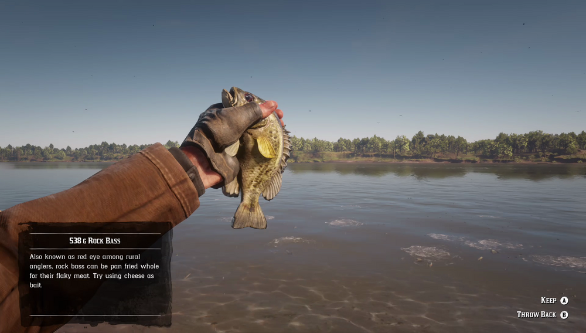

Rock Bass can be found in clear waters all over the country. Small and active near the surface, they are not too difficult to reel in. Rock Bass will take many food and natural baits, and are especially fond of cheese. They are particularly active on sunny days. Fishermen's lore has it that there is a legendary Rock Bass living in the peaceful woodland region of Tall Trees.
Dakota River is one location.
